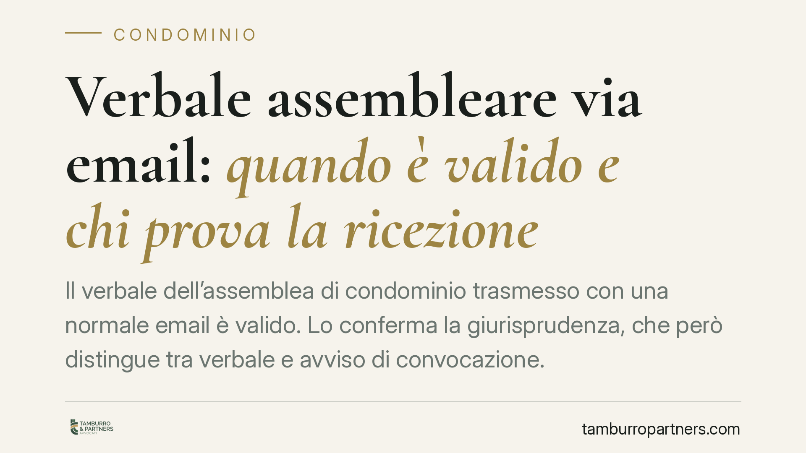

Verbale assembleare via email: quando è valido e chi prova la ricezione
Il verbale dell'assemblea di condominio trasmesso con una normale email è valido. Lo conferma la giurisprudenza, che però distingue tra verbale e avviso di convocazione. Il punto delicato riguarda la prova: spetta al condominio dimostrare quando il condòmino assente ha ricevuto il documento, perché da quella data decorre il termine per impugnare la delibera.

Il fatto
La questione è pratica e ricorrente: l'amministratore invia il verbale dell'assemblea ai condòmini assenti usando una comune email, non la posta elettronica certificata (PEC). Quel verbale ha lo stesso valore di quello spedito per raccomandata? E da quando scatta il termine per chi vuole contestare la delibera?
La risposta della giurisprudenza, consolidata anche nelle pronunce più recenti della Corte di Cassazione, è chiara: il verbale trasmesso via email ordinaria è valido. Il problema non è la validità, ma la prova della ricezione.
Inquadramento normativo
Occorre tenere separate due comunicazioni che la legge tratta in modo diverso.
L'avviso di convocazione è disciplinato dall'art. 66 delle disposizioni di attuazione del Codice civile, che impone forme precise: raccomandata, PEC, fax o consegna a mani. Qui la forma è richiesta a pena di annullabilità della delibera: un avviso inviato con email ordinaria non rispetta i requisiti di legge.
Il verbale assembleare, invece, segue una logica differente. La sua trasmissione serve a portare a conoscenza dei condòmini assenti il contenuto delle decisioni assunte. Non esiste una norma che imponga per il verbale le stesse forme vincolate previste per la convocazione. Per questo la comunicazione via email ordinaria è ritenuta idonea.
Il punto decisivo è l'art. 1137 c.c., che fissa in trenta giorni il termine per impugnare una delibera. Per i condòmini assenti, il termine decorre dalla comunicazione del verbale. Ecco perché la data di ricezione diventa centrale.
Implicazioni pratiche
La differenza tra validità e prova ha conseguenze concrete.
L'email ordinaria, a differenza della PEC, non fornisce una prova certa della consegna e della data di ricezione. La PEC genera ricevute di accettazione e consegna con valore legale; una normale email no.
L'onere di provare quando il condòmino ha ricevuto il verbale grava sul condominio, cioè su chi vuole far valere l'intervenuta scadenza del termine di trenta giorni. Se l'amministratore non è in grado di dimostrare la data di ricezione, il termine di impugnazione rischia di non decorrere affatto, lasciando la delibera esposta a contestazioni ben oltre il mese.
Per il condòmino assente che intende impugnare, questo significa un margine di tutela più ampio: finché il condominio non prova la data in cui ha ricevuto il verbale, non può essergli opposta la decadenza.
Per l'amministratore, al contrario, è un rischio da gestire. Affidarsi all'email ordinaria senza accorgimenti espone il condominio all'impossibilità di consolidare le proprie delibere.
Cosa fare in concreto
- Privilegiate la PEC per la trasmissione del verbale ai condòmini assenti: garantisce prova certa della data di consegna e blinda la decorrenza del termine di impugnazione.
- Se usate l'email ordinaria, richiedete sempre una conferma di lettura o un riscontro esplicito del destinatario, da conservare.
- Raccogliete e archiviate gli indirizzi email dei condòmini con una delibera o un consenso scritto, così da documentare che quel recapito è quello indicato per le comunicazioni condominiali.
- Tenete un registro ordinato delle comunicazioni, con data di invio e ogni elemento utile a ricostruire la ricezione.
- Se siete condòmini e avete dubbi sulla legittimità di una delibera, verificate la data effettiva di ricezione del verbale prima di ritenere scaduto il termine dei trenta giorni.
La distinzione tra verbale e avviso di convocazione è sottile ma decisiva. Confonderle può costare la validità di una delibera o la perdita di una possibilità di difesa. In caso di contenzioso, consigliamo di far valutare la documentazione da un professionista prima di assumere iniziative.
---
*Contributo informativo a cura di Tamburro & Partners - Avv. Giuseppe Tamburro. Non costituisce parere legale.*
Ogni condominio ha una storia a sé.
Se gestisci un'amministrazione e vuoi un confronto su una specifica questione condominiale, scrivi allo studio. Ti rispondiamo entro un giorno lavorativo.